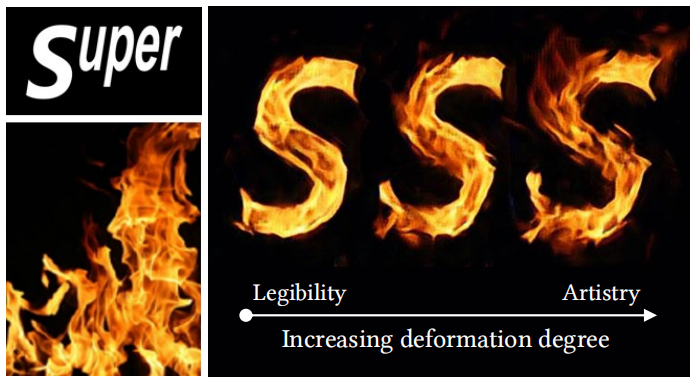
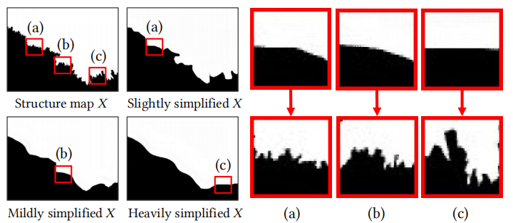
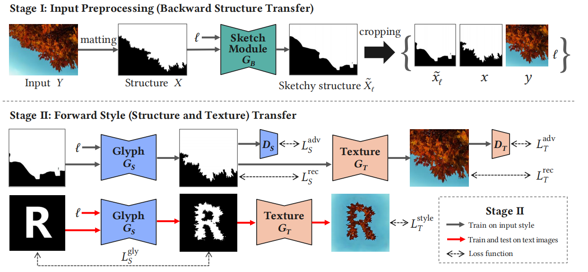
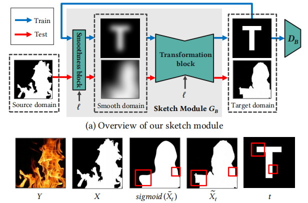
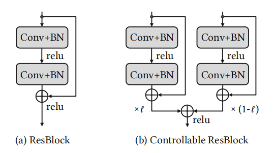

可调节迁移程度的GAN
艺术字体风格迁移是一个将图片特效整合到文字上的任务。但是，有的文字比较复杂，如果加上过多特效可能会使文字难以辨认；另一方面，一些简单的文字加上十足的特效后并不会影响辨认。因此，在这个任务中，控制文字形变的度是传统方法的难点。这篇文章作者提出了一种可以实时调节迁移度的模型，完美的解决了上面的问题，效果如下图所示：

艺术字体风格迁移这个任务中，既要保证文字的可读性，又要使文字看起来有特效。特效过多导致可读性下降，可读性过强会限制特效的添加；而不同人对于可读性与特效的要求又是不同的，因此最好的解决方案就是在模型中嵌入一个调节因子，让用户根据需求适时调整迁移幅度，来获得想要的效果。引入调节因子，传统方法就势必要面临两个困难：第一点，调节因子是主观设定的，难以被训练；第二点，找不到不同迁移程度的训练集。
为了解决这些问题，作者将一张风格图片做不同程度的模糊化，再将这些不同程度的模糊图片与文字结合，生成出不同迁移程度的艺术字体。下图展示了这个模糊化的过程：

为描述方便，记风格图为\(Y\)，文字为\(I\)，调节因子为\(l\in[0,1]\)。作者将生成器\(G\)分解为一个结构生成器与一个样式生成器，分别记为\(G_S\)与\(G_T\)。这样分解的好处是将样式与结构分离开来，使得我们可以更多的关注文字可读性的变化。最终有\(G=G_S\circ G_Y\)。
整个模型分为下图的两个阶段。第一个阶段，由给定的样式图，使用\(G_B\)生成不同粗细程度的模糊样式图。在前面的模块，作者提到的两个问题中就包含无法获得不同调节因子下的数据，而\(G_B\)就是在解决这个问题。一旦训练好\(G_B\)，就可以将其参数固定了。有了不同调节因子下的数据，第二个阶段就可以开始愉快的训练\(G_S\)与\(G_T\)了。

首先来看看如何训练\(G_B\)。\(G_B\)的输入是一张样式图与一个调节因子，输出是不同模糊程度的样式图。如何将调节因子与模糊程度相关联呢？作者想到，可以对图片先做高斯滤波，再将其还原，这一来一回图片就变得模糊了，而调节因子恰恰可以控制滤波的程度。这样就将二者关联上了，过程如下图所示。\(G_B\)的作用是重构图像，网络结构就是一个自编码器。除了重构损失之外，为了让\(G_B\)能够重构出更像文字的图片，作者还引入了对抗性损失。因此，\(G_B\)本质上就是一个小GAN。
第二阶段中，需要分开训练\(G_S\)与\(G_T\)。有一个值得注意的问题是，在训练\(G_S\)或是\(G_T\)时，只有样式图片的匹配数据，而没有文字的匹配数据。因此在计算对抗性损失与重构损失时，只在样式图片上计算。在训练\(G_S\)时，还应注意这是一个多对一的训练过程。为了防止mode collapse问题，作者设计了一种加权的残差块，一方面解决了训练问题，另一方面还在网络中添加了调节因子\(l\)：
这篇论文应该是CVPR2019的oral。给我的感觉是结构十分清晰，将一个大任务分解成了不同的小问题并逐个击破，引入调节因子也是一个很好的思路。最精彩的部分在于\(G_B\)的引入，使用GAN去生成paired训练数据。